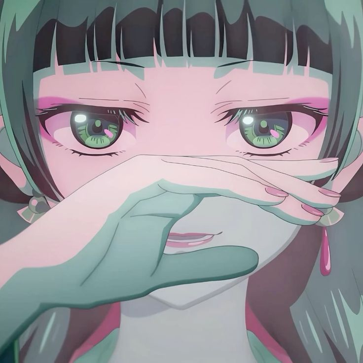
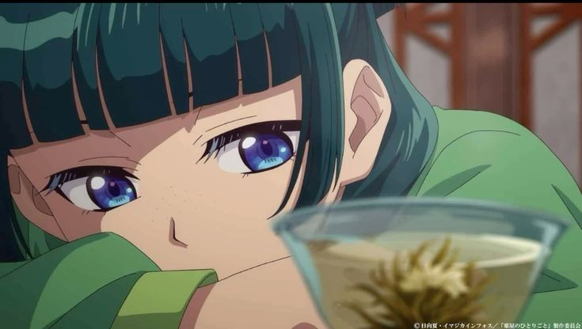
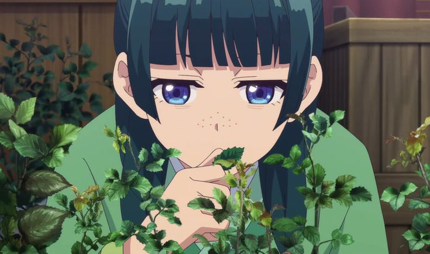
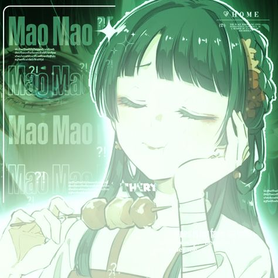

Perfil de Maomao
Anime: Los diarios de la boticaria (Kusuriya no Hitorigoto)
- Nombre: Maomao
- Edad: 17 años
- Altura: 153 cm
- Cabello: Verde oscuro
- Ojos: Morados
- Detalles: Suele pintarse pecas falsas alrededor de la nariz

MAO MAO
Habilidades
- Conocimiento experto en medicina tradicional y venenos
- Aguda capacidad de observación y deducción lógica
- Resolución de misterios y diagnósticos médicos
- Actitud independiente y pragmática


Historia
- Origen: Criada en el distrito del placer
- Mentor: Luomen (boticario que la educó)
- Familia:
- Madre: Fengxian (cortesana de alto rango)
- Padre biológico: Lakan (estratega del clan La)
- Padre adoptivo: Luomen
- Evento clave: Fue secuestrada y vendida como sirvienta al Palacio Interior del emperador
- Desarrollo: Usa sus conocimientos para resolver misterios en la corte y se gana la atención de figuras importantes como Jinshi